Уникальные предметы¶
Уникальные предметы: фиксированные строки со случайными значениями и собственные источники добычи.
Уникальные предметы чинятся только на рунической наковальне или столе резчика рун: каждая починка стоит 5 ед. (Азуритовая пыль) и восстанавливает прочность полностью.
Самоцветы (24)¶
| Название | Эффект | Как получить | |
|---|---|---|---|
| Choir of the Unburied | Small Passives in Radius grant their effects without being allocated Notable Passives, Mastery Notables and Masteries in Radius are switched off |
выпадает с: Масса костей | |
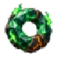 |
Circlet of Emerald Flame | Passives in a (Medium – Very Large) Ring around this socket can be Allocated without being connected to your tree (-5–-15)% to Fire, Cold and Lightning Resistance |
выпадает с: Прародитель |
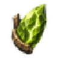 |
Dead Crown Shard: Breath | (3–5)% увеличение максимума выносливости per Dead Crown Shard set into the tree, this one included | выпадает с: Яглут |
| Dead Crown Shard: Flesh | (3–5)% увеличение максимума здоровья per Dead Crown Shard set into the tree, this one included | выпадает с: Яглут | |
| Dead Crown Shard: Spirit | (3–5)% увеличение максимума эйтра per Dead Crown Shard set into the tree, this one included | выпадает с: Яглут | |
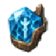 |
Dead Crown Shard: Veil | (3–5)% увеличение рунного щита per Dead Crown Shard set into the tree, this one included | выпадает с: Яглут |
| Eye Between Worlds | Gazes through the worlds to gear.pick.rift, and the way opens | выпадает в событиях рунных монолитов (кроме осквернённых): с их защитников и с шансом 5% за победу в событии; в зале «Зал трёх монолитов» на карте чертогов (5% за каждое выигранное испытание) | |
| Heart of the Mountain Mother | You can allocate passives from the starting point of the другой случайный путь path | выпадает с: Матерь | |
| Tear of the Mist Mother | (0–100)% increased Effect of Jewel Socket Passive Skills containing Corrupted Magic Jewels | выпадает с: Мать Тумана | |
| Trail of the First Antler | одна из 10 характеристик | выпадает с: Эйктюр | |
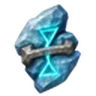 |
Долг зимы | Если в радиусе не взято ни одного значимого пассива, 30% урона от ударов врагов по вам откладывается и наносится равномерно в течение 3 с | выпадает где угодно с биома «Равнины» (уровень предмета 97) |
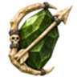 |
Залп курганов | Все призванные вами скелеты становятся скелетами-лучниками | выпадает где угодно с биома «Болото» (уровень предмета 43) |
| Клятва железа | Если в радиусе не взято ни одного значимого пассива, ваша стойкость также снижает потерю прочности снаряжения от входящего урона | выпадает где угодно с биома «Равнины» (уровень предмета 97) | |
| Очаг скитальца | Если в радиусе не взято ни одного значимого пассива, горение, намокание, холод и урон не отключают ваш комфорт | выпадает где угодно с биома «Равнины» (уровень предмета 97) | |
| Память Хугина | Если в радиусе не взято ни одного значимого пассива, убийство редкого или уникального монстра даёт вам один из его модификаторов на 20 секунд | выпадает где угодно с биома «Равнины» (уровень предмета 97) | |
| Пламя без погребения | Если в радиусе не взято ни одного значимого пассива, ваши поджоги наносят урон духом вместо огня | выпадает где угодно с биома «Равнины» (уровень предмета 97) | |
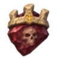 |
Пустой престол | Если в радиусе не взято ни одного значимого пассива, у вас может быть только 1 призванный скелет. Он наносит ×2 урона, имеет ×2 здоровья и считается вашим спутником | выпадает где угодно с биома «Равнины» (уровень предмета 97) |
| Сейд безмолвных | Все призванные вами скелеты становятся скелетами-магами, мечущими огненные шары | выпадает где угодно с биома «Гора» (уровень предмета 77) | |
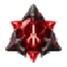 |
Сердце падших рун | 3 × Пассивы в радиусе могут стать пассивами темы случайная тема | выпадает с: Morgrim, the Shattered Lord |
| Сердце старших рун | Одно из: (25–100)% increased Effect of Small Passives in Radius / (25–100)% increased Effect of Notable Passives in Radius | выпадает с: Rungard, the Thousand-Faced Warden | |
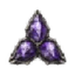 |
Три лика Морока | 3 × Adds случайный средний узел | выпадает в биоме «Туманные земли» |
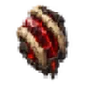 |
Утроба скверны | Allocates случайный ключевой узел Одно из: На (10–20)% меньше урона / На (10–20)% меньше брони, рейтинга уклонения и рунного щита / На (10–20)% меньше максимума здоровья / На (10–20)% меньше максимума эйтра / На (10–20)% меньше скорости передвижения / На (10–20)% меньше максимума выносливости |
с существа, элитного или босса, убитых в Тумане скверны, с шансом 0.2% (добыча) |
| Шёпот Нифльхейма | Passives in Radius of случайный ключевой узел can be Allocated without being connected to your tree | выпадает с: Королева | |
| Янтарь Первокорня | одна из 8 характеристик одна из 8 характеристик |
выпадает с: Древний |
Оружие (12)¶
| Название | Эффект | Как получить | |
|---|---|---|---|
| Долг кровника | Восстанавливает (5–8)% от максимума здоровья при полном Разрушении брони врага (4–6)% увеличение накопления разрушения брони топорами за каждые 10 единиц текущей ярости ×0,7 вампиризма от физического урона атак (30–50)% увеличение урона кровотечения (20–30)% увеличение шанса кровотечения (20–30)% увеличение урона против кровоточащих врагов |
выпадает где угодно с биома «Гора» (уровень предмета 77) | |
| Завещание оперителя | +(50–150)% к эффекту аффиксов экипировки с надетого колчана | выпадает где угодно с биома «Болото» (уровень предмета 43) | |
| Игла могильщика | Критические удары поглощают кровотечение цели, сразу нанося (20–30)% его оставшегося урона ножами (30–50)% увеличение урона кровотечения (20–30)% увеличение шанса кровотечения (30–50)% увеличение шанса критического удара против кровоточащих врагов |
выпадает с: Бренна; лежит в сундуках с сокровищами: Затонувшие склепы | |
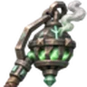 |
Кадило забытого имени | Вампиризм от урона типа «дух» восстанавливает рунный щит вместо здоровья ×0,7 восстановления рунного щита +(1–2)% health leech при нанесении урона типа «дух» +(20–30)% к скорости вампиризма +(10–15)% resistance от духа |
выпадает с осквернённых существ, убитых в Тумане скверны; в каждом сундуке зала «Оскверённый зал» на карте чертогов (20%) |
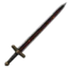 |
Клятва углей | Получаете (15–25)% физического урона как дополнительный урон типа «огонь» (30–40)% увеличение накопления горения (30–40)% увеличение урона горения +(15–25)% resistance от огня |
выпадает с: Владыка Рето |
| Колокол под горой | Альтернативная атака вашего скипетра заменяется на Горный колокол Горный колокол: попадания оружием вызывают звон, нанося (40–60)% урона и накоплений попадания врагам вокруг него Каждый Горный колокол резервирует 35% максимума эйтра (15–25)% увеличение области действия эффектов (20–30)% увеличение длительности оглушения |
выпадает с: Матерь | |
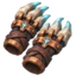 |
Костяшки громовержца | Получаете (20–30)% физического урона как дополнительный урон типа «молния» ×2 накопления шока при следующей атаке после уклонения ×0,8 длительности шока (20–30)% увеличение накопления шока (10–15)% уменьшение расход выносливости уклонения |
выпадает с: Эйктюр |
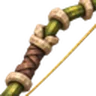 |
Песнь тростника | (40–60)% увеличение накопления недуга стрелами (20–30)% увеличение длительности отравления (20–30)% увеличение урона против отравленных целей +1 числа целей, которые пронзают стрелы против отравленных целей |
выпадает где угодно с биома «Черный лес» (уровень предмета 19) |
| Последний ряд | +3 числа целей, которые пронзают копья эхо-ударами На 30% больше урона за каждую цель, уже пронзённую копьями, до ×2,2 эхо-ударами (20–30)% увеличение урона страйка (20–30)% увеличение накопления оглушения |
выпадает с: Владыка Рето; лежит в сундуках с сокровищами: Крепости (Пепельные земли) | |
| Посох нижнего неба | 10% накопления шока от ваших попаданий применяется и к вам (8–12)% увеличение урона от молнии за каждые 10% шока на вас Влажность не снижает ваше сопротивление урону типа «молния» (30–50)% увеличение накопления шока против мокрых целей (20–30)% увеличение длительности шока (20–30)% увеличение радиус присутствия |
выпадает в событиях рунных монолитов (кроме осквернённых): с их защитников и с шансом 5% за победу в событии; в зале «Зал трёх монолитов» на карте чертогов (5% за каждое выигранное испытание) | |
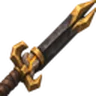 |
Право победителя | Попадания поглощают полностью разрушенную броню и наносят на 50% больше урона мечами (20–30)% увеличение урона против врагов со сломанной бронёй (30–50)% увеличение шанса критического удара против врагов со сломанной бронёй (20–30)% увеличение длительности разрушения брони |
выпадает где угодно с биома «Равнины» (уровень предмета 97) |
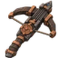 |
Четыре голоса кузни | (15–25)% увеличение урона арбалетов за каждый: тип болта, выпущенного за последние 10 секунд 100% шанс мгновенной перезарядки после смены типа боеприпасов (перезарядка 6 с) (20–30)% увеличение скорости снарядов (10–15)% шанс сберечь стрелу или болт при выстреле |
лежит в сундуках с сокровищами: Зараженный рудник |
Броня (10)¶
| Название | Эффект | Как получить | |
|---|---|---|---|
| Венец последнего пастыря | Связи могут быть направлены на ваших приспешников Максимум связей равен вашему пределу (30–50)% увеличение максимума здоровья для приспешников (20–40)% увеличение урона для приспешников Приспешники восстанавливают (1–2)% максимума здоровья в секунду |
выпадает в событиях рунных монолитов (кроме осквернённых): с их защитников и с шансом 5% за победу в событии; в зале «Зал трёх монолитов» на карте чертогов (5% за каждое выигранное испытание) | |
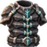 |
Завет несокрушимого | +1 рунного щита за каждые 100 единиц текущей прочности нагрудника Поглощённый рунным щитом урон идёт в износ нагрудника вместо износа от ударов: 1 прочности за 20 поглощённого (15–25)% увеличение регенерации здоровья +(15–25)% устойчивости к оглушению |
выпадает с: Rungard, the Thousand-Faced Warden |
| Изнанка грозы | −1 с к задержке восстановления рунного щита промокшим (30–50)% увеличение восстановления рунного щита промокшим ×0,8 resistance от холода +(15–25)% resistance от молнии (20–30)% увеличение регенерации эйтра промокшим |
выпадает где угодно с биома «Туманные земли» (уровень предмета 130) | |
| Капюшон двух приговоров | +1 проклятие предела ×0,65 проклятие эффекта (20–30)% увеличение проклятие длительности эффектов (8–12)% увеличение максимума эйтра (20–30)% увеличение накопления недуга против проклятых целей |
выпадает с осквернённых существ, убитых в Тумане скверны; в каждом сундуке зала «Оскверённый зал» на карте чертогов (20%) | |
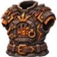 |
Кузня под рёбрами | (15–25)% полученного урона типа «огонь» восстанавливается как здоровье за 4 с (20–30)% увеличение регенерации здоровья во время горения ×0,8 рунного щита +(15–25)% resistance от огня (20–30)% увеличение урона горения (8–12)% увеличение максимума здоровья |
выпадает с: Яглут |
| Молчание источника | +(0,15–0,25) рунного щита за каждую единицу зарезервированного эйтра ×0,7 регенерации эйтра (20–30)% увеличение длительности эффектов (10–15)% увеличение максимума эйтра (15–25)% увеличение аура области действия эффектов |
выпадает где угодно с биома «Туманные земли» (уровень предмета 130) | |
| Поступь пролома | 100% шанс атаковать, не тратя выносливость (15–25)% увеличение скорости передвижения при оглушении цели недавно (4 с) (20–30)% увеличение накопления оглушения (8–12)% увеличение максимума выносливости |
выпадает где угодно с биома «Гора» (уровень предмета 77) | |
| Скатерть без стола | Восстанавливает (10–15)% от максимума выносливости при окончании эффекта медовухи (20–30)% увеличение consumed mead duration +2% resistance от огня за каждый: активного эффекта медовухи (до 5), +2% resistance от холода за каждый: активного эффекта медовухи (до 5), +2% resistance от молнии за каждый: активного эффекта медовухи (до 5) (10–15)% увеличение consumed mead effect +(10–15)% resistance от яда |
выпадает где угодно с биома «Черный лес» (уровень предмета 19) | |
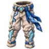 |
Следы над снегом | (30–50)% увеличение скорости снарядов в воздухе Восстанавливает (8–12)% от максимума рунного щита при приземлении после не менее 2 с в воздухе (перезарядка 5 с) (10–15)% увеличение высоты прыжка (10–15)% уменьшение расход выносливости в прыжке |
выпадает с: Гейрафа, Матерь |
| Шкура второго дыхания | Восстанавливает (4–6)% от максимума здоровья за 2 с при пассивном уклонении (перезарядка 2 с) ×1,3 к стойкости пока действует восстановление со временем (8–12)% увеличение максимума здоровья (10–15)% уменьшение расход выносливости уклонения |
выпадает где угодно с биома «Болото» (уровень предмета 43) |
Кольца (9)¶
| Название | Эффект | Как получить | |
|---|---|---|---|
| Зерно подо льдом | Восстанавливает (3–5)% от максимума эйтра при убийстве по замороженной цели Восстановление эйтра при полном запасе вместо этого наполняет рунный щит ×0,8 длительности обморожения (20–30)% увеличение накопления обморожения (8–12)% увеличение максимума эйтра |
выпадает с: Матерь | |
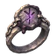 |
Непрочитанный приговор | Ваши проклятия на убитом враге переходят на ближайшего врага в вашем присутствии при убийстве по проклятой цели Перенесённые проклятия сохраняют (40–60)% оставшейся длительности ×0,8 проклятие эффекта (20–30)% увеличение проклятие длительности эффектов (15–25)% увеличение радиус присутствия |
выпадает с осквернённых существ, убитых в Тумане скверны; в каждом сундуке зала «Оскверённый зал» на карте чертогов (20%) |
| Обруч стылого жара | (20–30)% увеличение урона от огня против замороженных целей (20–30)% увеличение урона от холода против горящих целей +12% execute threshold of fire hits against frozen enemies +15% chance for cold hits to freeze burning enemies at once +(10–15)% resistance от огня +(10–15)% resistance от холода |
выпадает с: Гейрафа | |
| Очаг в кармане | (1–2)% увеличение регенерации здоровья за каждую единицу комфорт +(1–5) уровня комфорта ×0,8 Rested duration (1–2)% увеличение регенерации выносливости за каждую единицу комфорт (1–2)% увеличение регенерации эйтра за каждую единицу комфорт |
выпадает где угодно с биома «Болото» (уровень предмета 43) | |
| Поминальный узел | Восстанавливает (4–6)% от максимума здоровья за 3 с при гибели вашего приспешника (перезарядка 2 с) Приспешники на низком здоровье наносят ×1,2 урона (20–30)% увеличение максимума здоровья для приспешников (20–30)% увеличение урона для приспешников |
выпадает с: Королева | |
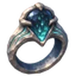 |
Слеза обратного дождя | Эффекты влажности на вас обращаются +(30–50)% к эффекту накладываемой влажности (15–25)% увеличение регенерации эйтра промокшим +(10–15)% resistance от холода |
выпадает где угодно с биома «Болото» (уровень предмета 43) |
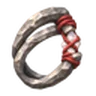 |
Соль общей раны | (15–25)% урона, полученного через связь, восстанавливается как здоровье за 4 с (15–25)% увеличение регенерации здоровья для связанных союзников пока действует восстановление со временем ×0,8 лечение healing effect (8–12)% увеличение максимума здоровья +(15–25)% к дальности связи |
выпадает в событиях рунных монолитов (кроме осквернённых): с их защитников и с шансом 5% за победу в событии; в зале «Зал трёх монолитов» на карте чертогов (5% за каждое выигранное испытание); выпадает с: Зил, Тангр |
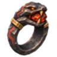 |
Уголёк под языком | ×0,5 длительности горения на носителе (25–40)% получаемого урона типа «яд» засчитывается как урон типа «огонь» +(10–15)% resistance от огня (20–30)% увеличение накопления горения (15–25)% увеличение регенерации здоровья во время горения |
выпадает с: Яглут |
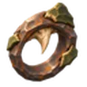 |
Шип внутри обода | (20–30)% урона шипов также идёт в накопление разрушения брони ×1,3 шипов против врагов со сломанной бронёй (20–30)% увеличение шипов (20–30)% увеличение длительности разрушения брони |
выпадает с: Масса костей |
Пояса (4)¶
| Название | Эффект | Как получить | |
|---|---|---|---|
| Дань Хель | Убивая редкого монстра, вы получаете его модификаторы на 60 секунд | выпадает где угодно с биома «Черный лес» (уровень предмета 25) | |
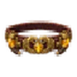 |
Кровь Квасира | +(1–3) ячейки для медовух: медовуха в них выпивается сама (-30–-50)% ко всем сопротивлениям 25% к длительности медовух в ячейках пояса 25% к крепости медовух в ячейках пояса |
выпадает где угодно с биома «Гора» (уровень предмета 80) |
| Узел последнего пульса | (30–50)% увеличение trinket effect при низком здоровье Восстанавливает (5–8)% от максимума здоровья за 3 с при активации тринкета (перезарядка 2 с) ×0,5 лечение healing effect (8–12)% увеличение максимума здоровья +(20–30)% к стойкости при низком здоровье |
выпадает где угодно с биома «Гора» (уровень предмета 77) | |
| Шнур запоздалого грома | ×1,5 области действия эффектов минами ×1,5 накопления недуга минами для каждой второй мины цепочки подрыва ×1,5 задержки минами (20–30)% увеличение урона минами (10–15)% увеличение области действия эффектов бомб |
лежит в сундуках с сокровищами: Зараженный рудник |
Щиты (3)¶
| Название | Эффект | Как получить | |
|---|---|---|---|
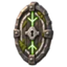 |
Дверь без порога | (3–5)% текущего рунного щита тратится при блокировании Потраченный рунный щит добавляется к вашему следующему попаданию в течение 3 с как урон типа «дух» ×0,8 восстановления рунного щита (20–30)% увеличение урона от духа (10–15)% уменьшение расход выносливости при блоке |
выпадает с: Morgrim, the Shattered Lord |
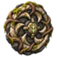 |
Жернова терновника | (10–15)% увеличение шипов за каждый: блока за последние 4 с (до 5) С поднятым щитом: ваше отбрасывание притягивает врагов к источнику импульса; у слэма это центр его области. Сила отбрасывания усиливает притяжение. Невосприимчивость к смещению сохраняется. (30–50)% увеличение шипов (10–15)% уменьшение расход выносливости при блоке (20–30)% увеличение отбрасывания |
выпадает с: Масса костей |
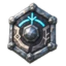 |
Миг между рунами | Восстановление рунного щита начинается при парировании Восстановление рунного щита не прерывается 1 с при парировании (15–25)% увеличение окна парирования (20–30)% увеличение восстановления рунного щита |
лежит в сундуках с сокровищами: Ледяные пещеры |
Колчаны (1)¶
| Название | Эффект | Как получить | |
|---|---|---|---|
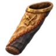 |
Колчан двух охот | Каждый выпущенный снаряд по очереди берёт следующую ячейку боеприпасов надетого колчана ×1,4 накопления недуга для снарядов с другим боеприпасом, чем у предыдущего ×1,2 урона для снарядов с тем же боеприпасом, что у предыдущего ×0,8 скорости натяжения, ×0,8 скорости перезарядки (20–30)% увеличение скорости снарядов (10–15)% шанс сберечь стрелу или болт при выстреле |
выпадает где угодно с биома «Гора» (уровень предмета 77); выпадает с: Зил, Тангр |
Инструменты (1)¶
| Название | Эффект | Как получить | |
|---|---|---|---|
| Молот терпеливого мастера | Баллисты восстанавливают (1–2)% максимальной прочности в секунду пока не стреляют (20–30)% увеличение скорости перезарядки баллист при полной прочности ×0,8 урона баллист (20–30)% увеличение баллист ailment build-up +(10–15)% шанс сберечь болты баллист |
лежит в сундуках с сокровищами: Крепости (Пепельные земли) |
Данные из Path of Valheiman 6.0.12, извлечены 2026-11-13.